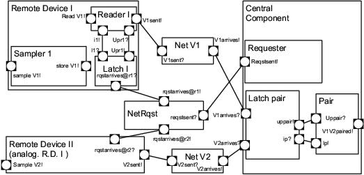
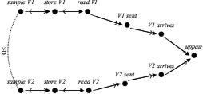
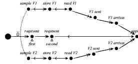

Remote Sensing
Remote Sensing is a system basically consisting of a central component and two remote sensors. Sensors periodically sample a set of environmental variables and store their values in shared memory. When the central component needs them, it broadcasts a signal to the sensors with a minimal inter-arrival time ($RqstSent$ event). Each sensor runs a thread devoted to handle this message by reading the last stored value from shared memory and sending it back to the central component. The latter pairs the readings so that another process can use that piece of information to perform certain actions on some actuators.

Figure 1: Remote Sensing: SUA architecture
Correlation Scenario: A correlation requirement is informally stated as "paired values should have been sampled in not-too-distant time instants''.

Activity Table ?
Refined Correlation Scenario: Remote Sensing instead of detailing the scenario, a couple of {$RqstSent$} events were added to the original one, in order to check correlation over the second request only; since observing the evolution of the second request should suffice to verify the property. This is a worst-case specialization. Time savings are dramatic compared to the original scenario (even to the \emph{sliced} original scenario).
ObsSlice determines: (a) the irrelevance of a sampler as soon as its values are read (ReadV1, ReadV2); (b) that a reader and its latch are not longer relevant when the corresponding value is sent (V1Sent, V2Sent, resp.); and (c) that the behavior of each net transporting those values can be ignored as soon as the corresponding value arrives (arrivesV1, arrivesV2, resp.). On the other hand, the $NetRequest$ component (the initiator of a broadcast request) should remain active since the scenario stipulates that there are exactly two request in the analyzed trace. Obviously, all components are deactivated if the underlying observer reaches an accept or trap location.
